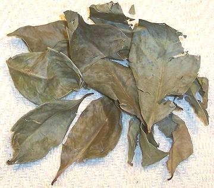

Daun Salam

[Daun Salam (Indonesian), Salam Leaf, Indian Bay Leaf (obsolete),
Eugenia polyantha]
Native to Borneo through Indonesia, this leaf is used in cooking only in
that region - but in Indonesia in particular it is used a lot. Fresh leaves
are used in curries and with meat, and dried leaves when fresh are not
available. Packages of dried leaves are often labeled "Indian Bay Leaf",
an obsolete usage from when Indonesia was called East India.
Many cookbooks, presuming you can't get Daun Salam, suggest using European
bay leaves. This is bad advice - Salam is not at all related to either
European or Indian bay leaves, both of which are highly aromatic Laurels with
an entirely different and more powerful flavor. Daun Salam is a myrtle. The
leaves are thinner and less aromatic, more earthy, and with a definite hint
of citrus. A much better substitute is Curry Leaf (which is a citrus).
Certainly not exact, but at least in the ballpark.
More on Myrtles
Buying:
Fresh leaves are not yet available in Los Angeles,
and if not here, good luck finding them anywhere. Dried leaves are, however,
available in Asian markets that have a significant Malay or Indonesian
clientele, and they work decently.
Cooking:
Some in Indonesia say the subtle flavor of
Salam leaf is enhanced by frying a moment before mixing with other ingredients
(as is often done in India with curry leaf), but Gernot Katzer found no
significant flavor enhancement from this procedure. He did find that letting
fresh leaves wither and dry for a few days did increase yield of essential
oil.
my_dsalamz 110109 www.clovegarden.com
© Andrew Grygus - agryg@clovegarden.com - Photos on
this page not otherwise credited are ©
cg1.- Linking to and non-commercial use of
this page permitted.